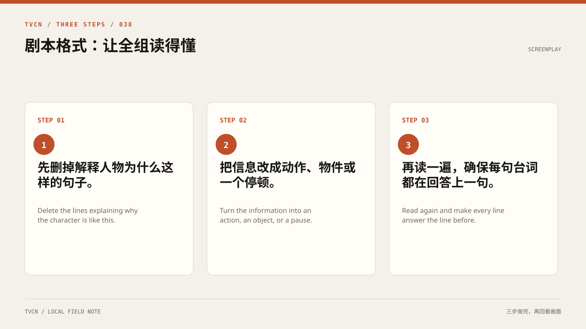

剧本是工作文件，不是文学作品
剧本格式的目的，是让导演、摄影、录音、剪辑在同一页上找到场景、动作、对白和时间。场景头写地点与时间，动作段只写镜头能拍到的东西，对白上面标角色名。
不要在对白里塞无法拍摄的心理描写；把“她很犹豫”改写成“她拿起钥匙，又放回桌上”。
边界
短片剧本不必写每个镜头，但必须写清每场的变化。格式再漂亮，如果每场没有目标、阻碍和转折，现场仍然拍不出来。
现场
剧本每场开头写清内外景、地点、时间；动作段落不超过四行；第一次出现的人物名全大写。让录音知道什么时候开门。
DIAGRAM / Screenplay
三步流程

怎么做
- 每场开头写清内外景、地点、时间。
- 动作段落不超过四行，第一次出现的人物名全大写。
- 把开门、电话、脚步等声音提示写进行动里，让录音知道收什么。
别踩
别把剧本写成小说；全组找不到场号和声音提示，现场就会漏。
图片说明：本页封面、图解与步骤图是编辑示意或结构图，不是本页实测照片，也不能当作器材测试证据；AI 辅助生成的图会在图注标出。判断器材或画面，以正文的测试条件与现场记录为准。